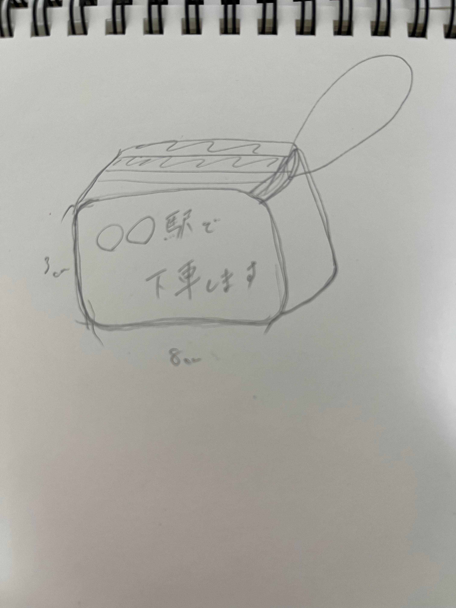

Maho 課題
design for others
制作の理由
電車内で、イヤホン無しなのにスマホで無音の映像を見ている人を観察していて
なぜ、イヤホン無しで無音で映像を見ていたのか考えた
その結果
・イヤホンを忘れた
・イヤホンをすると外の音が聞こえなくなる（降りる駅に気づけない等）
などといった意見があがった
その中で、イヤホンをすると降りる駅に気づけないという問題を解決できないかと考えた
そして、イヤホンをしていたり、万が一寝てしまっていたとしても
降りる駅で声をかけてもらえるようなストラップ作りを始めた。
完成イメージ

これを出力した結果、18時間かかるとのことだったので、
金曜日に3Dプリンターにお仕事を依頼して、
月曜日に回収しにいこうと考えていたのだが、
月曜日にうまくいってなかったので、改めて月曜日に出力しなおした。
この後、体調不良で通学できていません。